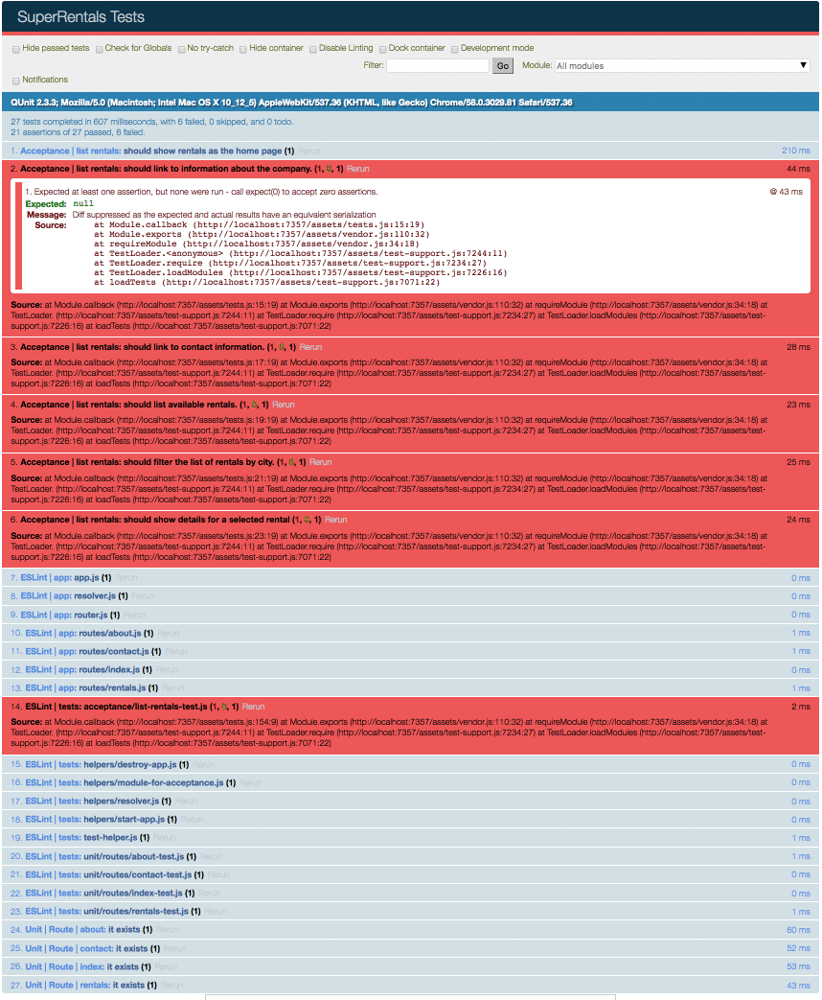

Routes e Templates Melhorar esta página
No nosso aplicativo Super Rentals, queremos acessar a página inicial e exibir a lista de imóveis para alugar. A partir daí, precisamos conseguir visitar uma página sobre a empresa e outra com informações de contato.
Página Sobre
Vamos começar construíndo nossa página "sobre".
Em Ember, quando queremos fazer uma nova página, precisamos criar uma route usando o Ember CLI. Para uma visão geral rápida de como o Ember estrutura as coisas, veja nosso diagrama na página de conceitos básicos.
Vamos usar Ember CLI para criar nossa "route" about.
1 |
ember generate route about |
Observação: executando ember help generate listará diversos recursos que você pode utilizar, você também pode criar os seus futuramente.
Após executar o comando, esse será o resultado:
1 2 3 4 5 6 7 |
installing route create app/routes/about.js create app/templates/about.hbs updating router add route about installing route-test create tests/unit/routes/about-test.js |
Uma Ember route é construída com três partes:
- Uma entrada no Ember
Router(/app/router.js), que mapeia nosso o nome da route a uma URL - Um arquivo de manipulador de route, que configura o que deve acontecer quando essa route é carregada
(app/routes/about.js) - Um template da route, onde é exibido o conteúdo da página
(app/templates/about.hbs)
Se você abrir /app/router.js, verá uma nova linha de código para a route about, chamanda this.route('about') na função Router.map. Essa nova linha de código diz ao roteador Ember para executar o nosso arquivo /app/routes/about.js quando um visitante acessa /about.
| app/router.js | |
1
2
3
4
5
6
7
8
9
10
11
12
13 |
import Ember from 'ember'; import config from './config/environment'; const Router = Ember.Router.extend({ location: config.locationType, rootURL: config.rootURL }); Router.map(function() { this.route('about'); }); export default Router; |
Como a página sobre a empresa vai ter um conteúdo estático, não vamos ajustar o arquivo de manipulador de route /app/routes/about.js agora. Em vez disso, vamos abrir nosso arquivo de template /app/templates/about.hbs e adicionar algumas informações sobre Super Rentals:
Agora, execute ember server (ouember serve, ou mesmo ember s para abreviar) em seu terminal para iniciar o servidor de desenvolvimento Ember e acesse http://localhost:4200/about para ver nossa nova página em ação!
Página de contato
Agora vamos criar outra route com informações de contato. Mais uma vez, começaremos gerando uma route:
1 |
ember g route contact |
Mais uma vez, adicionamos uma nova route em app/router.js e criamos um manipulador de route em app/routes/contact.js.
No template da route /app/templates/contact.hbs, vamos adicionar informações de contato:
Agora, quando você acessar http://localhost:4200/contact, será exibido a página de contato.
Navegando entre links com Helper {{link-to}}
Navegar entre os links se tornou uma dor agora, então vamos facilitar isso. Vamos colocar um link para a página de contato para a página sobre, e um link correspondente para a página sobre na página de contato.
Para fazer isso, usaremos um Ember Helper {{link-to}} que facilita a navegação entre nossas páginas. Vamos ajustar o nosso arquivo about.hbs:
Neste caso, estamos dizendo para o Helper {{link-to}} que queremos criar um link para a route: contact.
Quando olhamos para a nossa página sobre http://localhost:4200/about, agora temos um link funcionando para nossa página de contato:
Agora, vamos adicionar um link correspondente à página de contatos, para que possamos navegar entre about econtact:
Página de aluguéis
Além das nossas páginas about e contact, queremos listar os aluguéis que nossos clientes. Então, vamos adicionar uma terceira route e chamá-la de rentals:
1 |
ember g route rentals |
E então vamos atualizar nosso novo template (/app/templates/rentals.hbs) com algum conteúdo inicial.
Voltaremos a esta página para adicionar as propriedades reais do aluguéis.
Página index
Com nossas três routes criada, estamos prontos para adicionar uma route de index, que irá lidar com solicitações para o URI (/) do nosso site.
Gostaríamos de fazer a página de aluguel na página principal do nosso aplicativo e já criamos uma route.
Portanto, queremos que nossa route index simplesmente redirecione nosso cliente para a route rentals que já criamos.
Usando o mesmo processo que fizemos anteriormente, primeiro devemos criar uma nova route chamada index.
1 |
ember g route index |
Esse é o resultado do comando para você olhar e se familiarizar:
1 2 3 4 5 |
installing route create app/routes/index.js create app/templates/index.hbs installing route-test create tests/unit/routes/index-test.js |
Ao contrário dos outros manipuladores de routes que fizemos até agora, a route index é especial:
NÃO requer uma entrada no mapeamento do roteador.
Vamos aprender mais sobre por que a entrada não é necessária mais tarde quando olharmos para nested routes do Ember.
Tudo o que queremos fazer quando um usuário visita nossa URL (/) é redireciona-lo para /rentals.
Para fazer isso, adicionaremos um código ao nosso manipulador de route index, implementando um hook de ciclo de vida da route, chamado beforeModel.
Cada manipulador de route possui um conjunto de "lifecycle hooks", que são funções invocadas em momentos específicos durante o carregamento de uma página.
O hook beforeModel é executado antes que os dados sejam obtidos pelo hook model e antes que a página seja renderizada.
Veja a próxima seção para obter uma explicação do hook model.
Em nosso manipulador de route index, chamaremos a função replaceWith.
A função replaceWith é semelhante à funçãotransitionTo da rota, sendo a diferença que replaceWith substituirá o URL atual no histórico do navegador, enquantotransitionTo irá adicionar ao histórico.
Como queremos que nossa route de "rentals" seja nossa página inicial, usaremos a função replaceWith.
Em nosso manipulador de route index, vamos chamar replaceWith em beforeModel.
| app/routes/index.js | |
1 2 3 4 5 6 7 |
import Ember from 'ember'; export default Ember.Route.extend({ beforeModel() { this.replaceWith('rentals'); } }); |
Agora, vamos acessar a route / e ver que ela vai redirecionar para /rentals.
Criando uma barra de navegação
Queremos agora criar uma barra de navegação que tenha o nome do nosso aplicativo e os links para nossas páginas internas.
Para mostrar a mesma barra em cada página, vamos usar o template /app/templates/application.hbs.
Vamos edita-lo novamente substituindo seu conteúdo por este:
Muito do código acima já conhecemos, mas o {{outlet}} dentro de <div class="body"> é novo.
O Helper {{outlet}} diz para o Ember onde o conteúdo das nossas routes (como about ou contact) deve ser mostrado.
A partir deste ponto, devemos conseguir navegar entre as páginas about,contact, e rentals.
Você pode agora optar seguir na próxima página ou fazer os testes de aceitação das páginas que acabamos de criar.
Implementando testes de aceitação
Agora que temos várias páginas em nosso aplicativo, vamos ver como criar testes para elas.
Como mencionado anteriormente na página Planejando seu aplicativo, um teste de aceitação do Ember automatiza a interação com o nosso aplicativo simulando uma navegação de um usuário real.
Se você abrir o teste de aceitação que criamos (/tests/acceptance/list-rentals-test.js), você verá nossos objetivos, que incluem conseguir acessar as páginas about e contact. Vamos começar por lá.
Primeiro, queremos testar que ao acessar / nosso aplicativo seja redirecionado corretamente para /rentals. Usaremos o Helper visit do Ember e, em seguida, verificamos se nossa URL atual é /rentals.
| /tests/acceptance/list-rentals-test.js | |
1 2 3 4 5 6 |
test('should show rentals as the home page', function (assert) { visit('/'); andThen(function() { assert.equal(currentURL(), '/rentals', 'should redirect automatically'); }); }); |
Agora, execute os testes digitando ember test --server no terminal (ou ember t -s).
Em vez de 7 falhas, agora deve ter 6 (5 falhas de aceitação e 1 ESLint). Você também pode executar o nosso teste específico, selecionando o teste chamado "Acceptance | list rentals" no campo de seleção "Module" na UI de teste.
Você também pode marcar a opção "Hide passed tests" para mostrar os testes aprovados, juntamente com os testes que ainda estão falhando (porque ainda não os construímos).

Helpers de testes do Ember
Ember fornece uma variedade de helpers de teste de aceitação para tornar as tarefas comuns mais fáceis, como visitar links, preenchendo campos, clicando em links/botões e esperando que as páginas sejam exibidas.
Esses são os helpers que usaremos com mais frequencia:
visit- visita um link do nosso aplicativoclick- clica em um link/botão simulando um usuárioandThen- espera que nossa página tenha terminando de carregar para fazer as verificações. No nosso teste abaixo, por exemplo, queremos aguardar após umclicke verificar se a página correta foi carregadacurrentURL- retorna a URL atual do nosso aplicativo
Testar uma visita na página de contatos e sobre
Agora vamos adicionar um código que simula um visitante que chega na nossa página inicial, clicando em um de nossos links e depois visitando uma nova página.
| /tests/acceptance/list-rentals-test.js | |
1 2 3 4 5 6 7 8 9 10 11 12 13 14 15 |
test('should link to information about the company.', function (assert) { visit('/'); click('a:contains("About")'); andThen(function() { assert.equal(currentURL(), '/about', 'should navigate to about'); }); }); test('should link to contact information', function (assert) { visit('/'); click('a:contains("Contact")'); andThen(function() { assert.equal(currentURL(), '/contact', 'should navigate to contact'); }); }); |
Nos testes acima, estamos usando assert.equal(). assert.equal() verifica se dois itens (nosso primeiro e segundo argumentos) são iguais. Se não são iguais, nosso teste falhará.
O terceiro argumento opcional nos permite fornecer uma mensagem melhor, que será mostrada quando esse teste falhar.
Nos nossos testes, também chamamos dois helpers (visit e click) um após o outro. Embora o Ember faça uma série de coisas quando fazemos essas chamadas, o Ember esconde essas complexidades, dando-nos estes asynchronous test helpers.
Se você deixou o ember test em execução, ele deve ter atualizado automaticamente para mostrar que os três testes relacionados à navegação já passaram.
In the screen recording below, we run the tests, deselect "Hide passed tests", and set the module to our acceptance test, revealing the 3 tests we got passing.
No screenshot abaixo, executamos os testes, desmarque "Hide passed tests" e selecione o module para nosso testes de aceitação, temos agora 3 testes passando e 3 testes falhando.